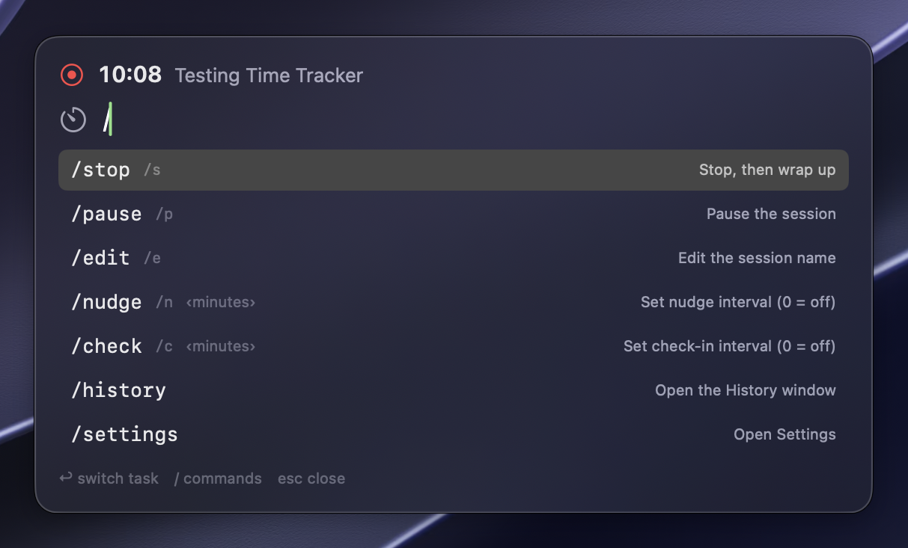
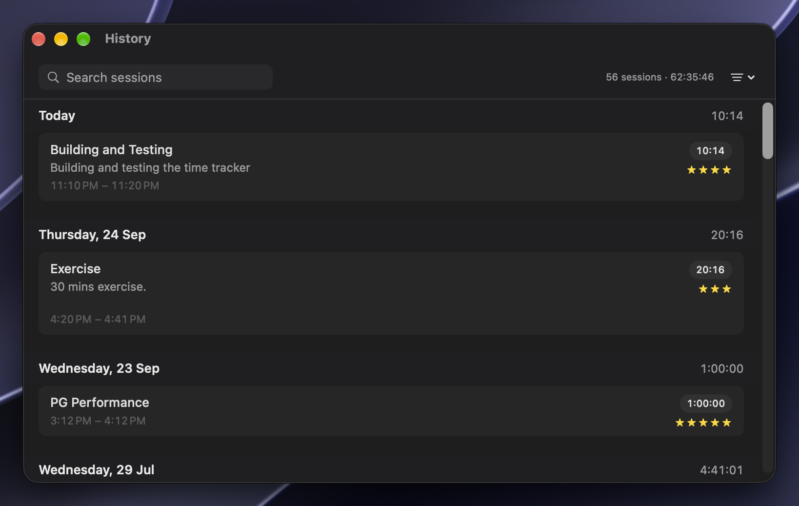

The easiest way to remember what you actually did today.
Time Tracker sits quietly in your menu bar. Tell it what you're starting, and it keeps track — reminding you gently when you forget.
Download for Mac — freeA day with Time Tracker
Here's what using it actually looks like.
It reminds you to start
Your workday has begun but nothing is being tracked, so you get a friendly nudge.
You start in two seconds
Press Cmd Shift Return anywhere, type what you're doing, press Return. A timer appears in your menu bar. Type / any time for commands.

You pause for lunch
Pause and resume with a keystroke. Lunch doesn't count toward your work.
It notices you stepped away
You left for a 40-minute meeting with the timer still running. When you're back, it asks what to do with that time.
You wrap up in one line
Stop the timer, write what you got done, and rate how it went. Skip it if you're in a hurry — you can always add it later.


Your history is waiting
Every session, grouped by day, with totals. Search it, filter by rating, and fix anything you got wrong.

Why people stick with it
Most time trackers get abandoned by Wednesday. This one is built to survive a real week.
It's fast
Starting a timer takes one shortcut and a few words. No forms, no projects to set up.
It's polite
Reminders come one at a time, and you choose how often — or switch them off.
It's yours
Your data lives in your private iCloud and syncs across your Macs. Nothing is shared.
Give tomorrow a try.
Install it tonight, turn on Launch at login, and let it nudge you in the morning.
Download for Mac — free